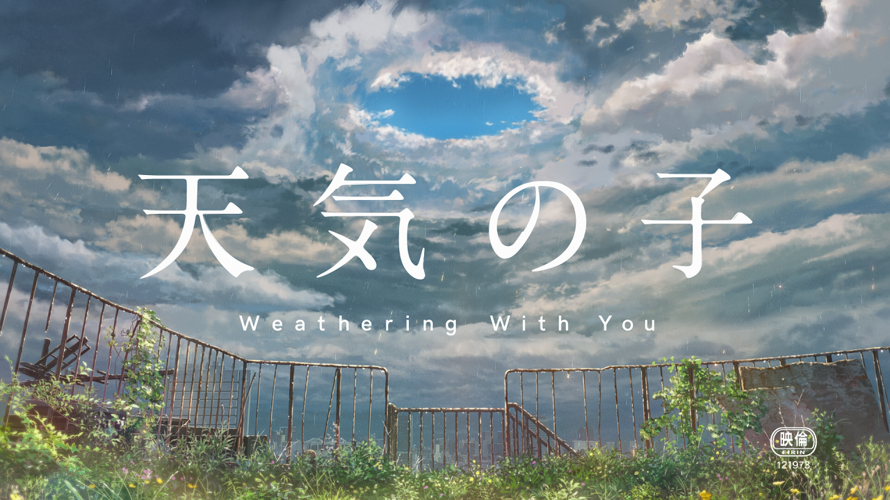
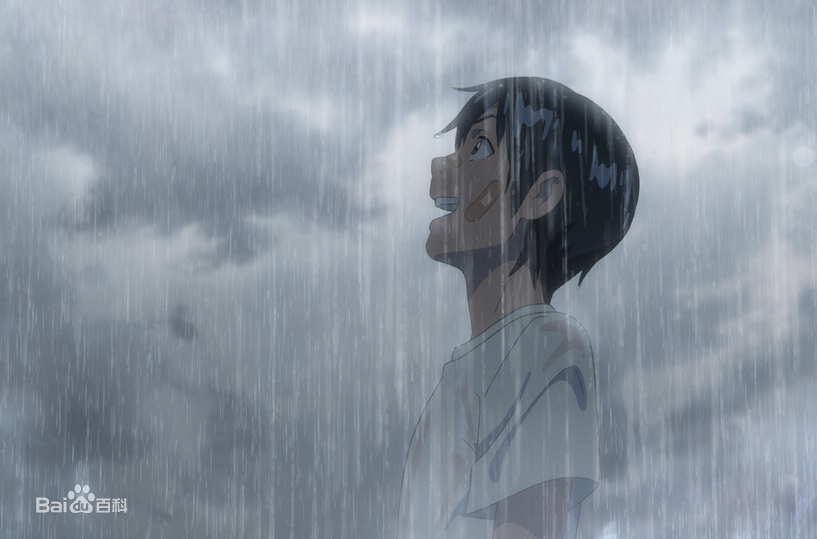

天气之子
剧情简介:
“想尝试前往，那道光芒之中”
高一的夏天，帆高从离岛离家出走，来到东京。
但是很快他的生活就陷入了拮据，只能孤苦伶仃地度日，之后他终于找到了一份工作，是为古怪的超自然杂志撰稿。
连日不断的降雨，仿佛是在预示他接下来的命运。此时，在喧嚣的都市一角，帆高与一位少女相遇。
其名为“阳菜”，因为某些事，现在她与弟弟两人一起开朗坚强地生活。而她，拥有不可思议的能力。
“呐，现在开始就要放晴了哦”
雨逐渐停止，街道笼罩在美丽的光芒中。那是仅仅在心中祈祷，就能让天空放晴的力量——
角色介绍:
森岛帆高
配音：醍醐虎汰朗（日语）；高晗（普通话）
一个为了追逐光芒而离开偏远岛屿家乡的高中生。他离开了岛上的家，来到东京，找到一份在超自然现象杂志出版社的工作。但自从他参加新工作以来，天气一直很糟，每天都下雨。
配音：森七菜（日语）；杨鸣（普通话）
阳菜似乎可以控制天气，当她祈祷时雨就停了，随着她合拢的双手，雨水就会被吸回天空。在城市的一角， 帆高与阳菜相遇了。
天野阳菜